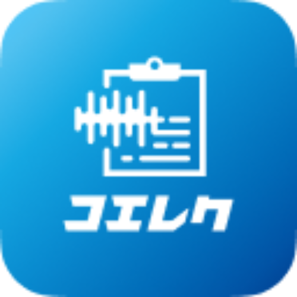
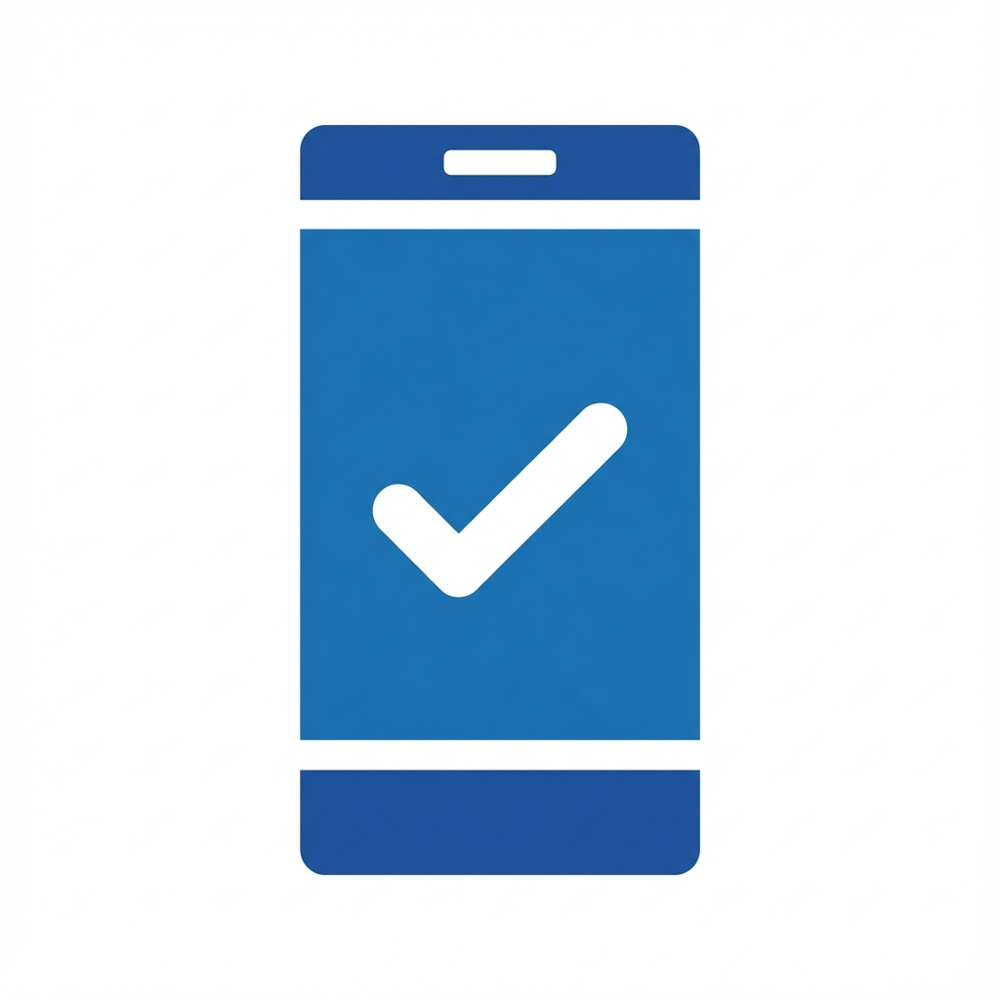
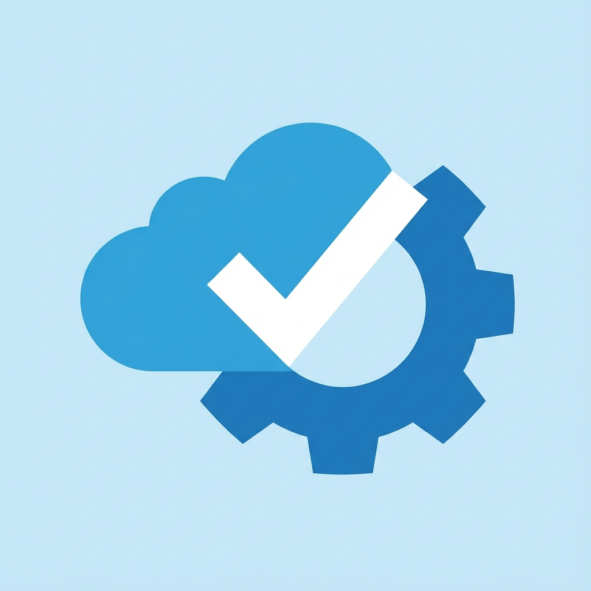

救急外来の記録時間80%削減｜音声入力カルテ コエレク


救急の現場で、こう思ったことはありませんか？
「最初から、完璧に整理されたカルテが手元にあれば…」
しかし実際には――
スタッフにより問診の質はバラつき、
聞き漏れ・聞き直しが日常化
夜勤・連勤で集中力が落ち、
本来必要な情報が抜ける
「忙しいから後で」の結果、
不十分な情報伝達が発生
更新されない共有カルテで、
診察前に状況が把握できない
診察後もカルテ記載が終わらず、
残業が常態化
記載漏れが原因で、
責任者の訴訟リスクだけが増えていく
そして部門を預かる立場なら、
こう感じたことがあるはずです。
「この状態では、誰も守れない」
救急のクオリティは "最初の問診" で決まります。
判断に必要なのは、この3点だけ
効果
月16時間を取り戻し、救急スタッフのカルテ残業を0に（時間確保のファクト）
安全
オンプレ電子カルテでも運用可能。ガイドライン準拠で安心して導入できる
導入負担
ベンダー調整・改修なし。最短1ヶ月で開始でき、まず小さく試せる
記録方法を、変えるだけで

診察後、PCと格闘
- ❌20分間、タイピング
- ❌会話を思い出して文章化
- ❌記録中は何もできない

コエレクなら

診察中、話すだけ
- ✅2分で記録完了
- ✅会話がそのまま記録に
- ✅手が空く、時間が増える
コエレクなら叶える未来。
従来の音声入力カルテとの決定的な違い
構造化テンプレで漏れゼロへ
確認できない
話すだけで構造化・要点整理
音声入力に慣れが必要
スマホで即共有
共有機能なし
QRで一括転記
クリック数が多く面倒
従来の音声入力は「話した内容をそのまま文字化」するだけ。
コエレクは「構造化・整理・共有・転記」まで完結させる。
これが、救急の現場が求めていた"本物のAI記録システム"です。
だから叶える救急の未来
現場が混乱しない。今日から使える。

マニュアルなしで
スマホ一つで簡単導入
- 看護師・研修医でも"即"使える
- 必要なのはスマホだけ
- A4マニュアル1枚でスタート
- 夜勤帯でも説明不要
医師一人から
簡単導入
- 部長の号令で一斉導入…ではなく
- まず1名の医師がトライできる
- 効果を見て自然に広がっていく
- 現場抵抗なくトライできる

現場の抵抗なく
簡単導入・SEの負担なし
- 電子カルテへの組み込み不要
- QRコードリーダー1台でOK
- システム改修一切なし
- 導入当日から運用開始
オンプレ電子カルテでも、安全にAIが使える理由
QRコード転送だから実現する、完全なセキュリティ

3省2ガイドライン完全準拠
厚生労働省、経済産業省、総務省が定める医療情報システムの安全管理に関するガイドラインに完全対応。
医療機関が安心して導入できるセキュリティ基準をクリアしています。
Microsoft Azure採用
世界最高水準のクラウドセキュリティで医療情報を保護。
大手医療機関も採用するエンタープライズグレードのセキュリティ基盤です。
電子カルテベンダーとの調整不要
QRコード転送方式のため、電子カルテへの組み込みは一切不要。
ベンダーへの依頼、契約変更、システム改修費用…すべてゼロで導入できます。
導入まで、驚くほど簡単。
お問い合わせから最短1ヶ月で、あなたの救急が変わります。
お問い合わせ
お問い合わせフォームから
ご気軽にご連絡ください
Webミーティングで概要説明
担当が最適プランを提案
お試し導入
1ヶ月お試しで効果を体験
利用開始
電子カルテベンダーとの
調整不要で即導入
面倒な手続きなし。システム改修なし。今日から始められます。
賢い先生に選ばれる、3つの理由
なぜコエレクが、全国の先進的救急外来で導入されているのか
最もシンプルな操作
話す、選ぶ、かざす。たった3ステップ。
複雑な設定不要、マニュアル不要。
研修医でも初日から使いこなせます。
どの電子カルテでも使える
QRコード転送だから、電子カルテの種類を選びません。
既存システムへの影響ゼロ。
導入のハードルが極めて低い設計です。
救急医22年の現場経験から生まれた
開発者は現役の救急医。
「実際に使える」ことを最優先に設計。
現場の声を反映した、継続的なアップデート。
1分で分かる：3ステップ手技
「本当に簡単？」を、実際の操作で確認できます。
話す→選ぶ→かざす。これだけです。
実際の救急外来で、どう使われているか。
「簡単さ」と「現場の満足度」を動画で確認できます。
⏱️ 診察を止めない、圧倒的なスピード
実際の救急外来での操作映像です。
患者さんと話した内容を「思い出す」作業と「タイピングする」時間がゼロになる感覚をご覧ください。
函館五稜郭病院
「救急要請が重なる時、タイピングでは間に合わない。
コエレクなしでは、もう考えられない。」
札幌徳洲会病院 救急外来
「研修医でも迷わず使えて、救急外来での教育が格段にスムーズになりました。」
勤医協中央病院
「話すだけで記録できるので、患者さんとの対話を中断することがありません。」
函館五稜郭病院
「救急要請が重なる時、タイピングでは間に合わない。コエレクなしでは、もう考えられない。」
料金（目安・税別）
まずは小さく導入して効果を確認できます。
導入費用
※月額は年額払いの料金です。
- ※金額は税別です（必要に応じて変更可能）
- ※ご利用人数・運用要件により変動する場合があります
稟議セット（無料）
決裁に必要な資料をまとめてお渡しします。
- 効果試算シート（Before/After）
- 導入フロー（最短導入手順）
- セキュリティ概要（ガイドライン観点）
- 稟議文案テンプレ（そのまま使える）
一括パッケージ（必要な方へ）
開けるだけですぐ使える導入一式
99,800円（税別）

- スマホID管理
- QRリーダー
- 初期セットアップ一式（運用に合わせた最短導入）
※院内ですでにスマホ/QRリーダーをご用意できる場合、このパッケージは不要です。
導入前の不安、すべて解消します
Q1: 医療用語はちゃんと認識されますか？
+はい、AIが自動で医療用語に変換します。
『STEMI』『トロポニン』『心筋梗塞』など、専門用語も正確に認識。
修正が必要なのは全体の10%以下。ほとんどの記録はそのまま使えます。
Q2: 電子カルテと連携できますか？
+はい、電子カルテを選びません。
QRコード転送方式なので、どの電子カルテシステムでもそのまま使用可能です。
システム改修は一切不要です。
Q3: 導入までどれくらいかかりますか？
+お試しから、すぐに導入可能です。
無料トライアル申込 → アカウント発行（即日） → その日から使用開始
複雑な設定は一切ありません。
Q4: スタッフへの教育は必要ですか？
+一度使えば、教育は不要です。
操作は『話す、選ぶ、かざす』の3つだけ。シンプルすぎて、忘れようがありません。
初回のみ簡単な使い方説明を行います。
Q5: オリジナルのプロンプトは使えますか？
+はい、あなたのカルテができるプロンプトサポート付きです。
診療科や施設に合わせたオリジナルプロンプトを設定可能。
『あなたのカルテ』をコエレクが実現します。
Q6: 月額料金はいくらですか？
+月額15,000円〜です。
施設規模や利用人数により詳細料金が異なります。
まずは30日間無料トライアルで効果を実感してください。
Q7: 無料トライアルはありますか？
+はい、30日間無料トライアル実施中です。
いつでも解約可能。導入リスクはゼロです。
まずは実際にお試しいただき、記録時間の短縮を体感してください。
記録に奪われた時間を、今日、取り戻す。
月16時間削減、年192時間。
英語論文1-2本分の時間が、あなたに戻ってきます。
この時間を、
患者さんに。
教育に。
研究に。
まずは30日間、無料でお試しください。
全国の先進的医療機関が選んだ、
最もシンプルな音声入力
救急医療の最前線で選ばれています
※月16時間の“時間確保”は、救急スタッフのカルテ残業を0に近づけるためのファクトです